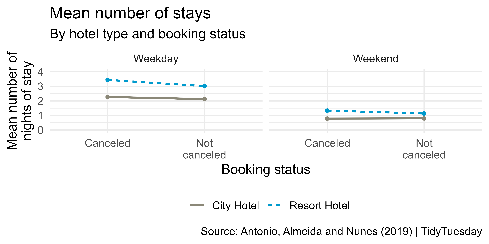

# load packages
library(countdown)
library(tidyverse)
library(glue)
library(lubridate)
library(scales)
# set theme for ggplot2
ggplot2::theme_set(ggplot2::theme_minimal(base_size = 14))
# set width of code output
options(width = 65)
# set figure parameters for knitr
knitr::opts_chunk$set(
fig.width = 7, # 7" width
fig.asp = 0.618, # the golden ratio
fig.retina = 3, # dpi multiplier for displaying HTML output on retina
fig.align = "center", # center align figures
dpi = 300 # higher dpi, sharper image
)Data wrangling - II
Lecture 4
Warm up
Announcements
RQ2 due Tuesday:
Will be posted tomorrow
Covers everything since the previous quiz
Setup
Transforming and reshaping a single data frame (cont.)
Data: Hotel bookings
- Data from two hotels: one resort and one city hotel
- Observations: Each row represents a hotel booking
hotels <- read_csv("https://raw.githubusercontent.com/rfordatascience/tidytuesday/master/data/2020/2020-02-11/hotels.csv")Scenario 1
We…
have a single data frame
want to slice it, and dice it, and juice it, and process it, so we can plot it
Monthly bookings
Come up with a plan for making the following visualization and write the pseudocode.

Livecoding
Reveal below for code developed during live coding session.
Code
hotels <- hotels |>
mutate(
arrival_date_month = fct_relevel(arrival_date_month, month.name),
season = case_when(
arrival_date_month %in% c("December", "January", "February") ~ "Winter",
arrival_date_month %in% c("March", "April", "May") ~ "Spring",
arrival_date_month %in% c("June", "July", "August") ~ "Summer",
TRUE ~ "Fall"
),
season = fct_relevel(season, "Winter", "Spring", "Summer", "Fall"),
season_emoji = case_when(
season == "Winter" ~ "❄️",
season == "Spring" ~ "⛅️️",
season == "Summer" ~ "☀️",
season == "Fall" ~ "☂️"
)
)
hotels |>
count(season_emoji, hotel, arrival_date_month) |>
ggplot(aes(x = arrival_date_month, y = n, group = hotel, linetype = hotel)) +
geom_line(linewidth = 0.8, color = "cornsilk4") +
geom_text(aes(label = season_emoji), size = 6, show.legend = FALSE) +
scale_x_discrete(labels = month.abb) +
labs(
x = "Arrival month", y = "Number of bookings", linetype = NULL,
title = "Number of monthly bookings",
subtitle = "July 2015 to August 2017",
caption = "Source: Antonio, Almeida and Nunes (2019) | TidyTuesday"
) +
coord_cartesian(clip = "off") +
theme(
legend.position = c(0.12, 0.9),
legend.box.background = element_rect(fill = "white", color = "white"),
plot.subtitle = element_text(color = "cornsilk4"),
plot.caption = element_text(color = "cornsilk4")
)A few takeaways
forcats::fct_relevel()in amutate()is useful for custom ordering of levels of a factor variablesummarize()aftergroup_by()with multiple variables results in a message about the grouping structure of the resulting data frame – the message can be supressed by defining.groups(e.g.,.groups = "drop"or.groups = "keep")summarize()also lets you get away with being sloppy and not naming your new column, but that’s not recommended!
Rowwise operations
We want to calculate the total number of guests for each booking. Why does the following not work?
hotels |>
select(adults, children, babies) |>
mutate(guests = sum(c(adults, children, babies)))# A tibble: 119,390 × 4
adults children babies guests
<dbl> <dbl> <dbl> <dbl>
1 2 0 0 NA
2 2 0 0 NA
3 1 0 0 NA
4 1 0 0 NA
5 2 0 0 NA
6 2 0 0 NA
7 2 0 0 NA
8 2 0 0 NA
9 2 0 0 NA
10 2 0 0 NA
# … with 119,380 more rowsRowwise operations
hotels |>
select(adults, children, babies) |>
rowwise() |>
mutate(guests = sum(c(adults, children, babies))) |>
filter(adults > 0, children > 0, babies > 0) # to show sum works# A tibble: 172 × 4
# Rowwise:
adults children babies guests
<dbl> <dbl> <dbl> <dbl>
1 2 1 1 4
2 2 1 1 4
3 2 1 1 4
4 2 1 1 4
5 2 1 1 4
6 2 1 1 4
7 2 1 1 4
8 2 2 1 5
9 2 2 1 5
10 1 2 1 4
# … with 162 more rowsColumnwise operations
Use across() combined with summarise() to calculate summary statistics for multiple columns at once:
# A tibble: 1 × 2
stays_in_weekend_nights stays_in_week_nights
<dbl> <dbl>
1 0.928 2.50# A tibble: 1 × 4
stays_in_weekend_nights_1 stays_in_weekend_ni…¹ stays…² stays…³
<dbl> <dbl> <dbl> <dbl>
1 0.928 0.999 2.50 1.91
# … with abbreviated variable names ¹stays_in_weekend_nights_2,
# ²stays_in_week_nights_1, ³stays_in_week_nights_2Select helpers
starts_with(): Starts with a prefixends_with(): Ends with a suffixcontains(): Contains a literal stringnum_range(): Matches a numerical range like x01, x02, x03one_of(): Matches variable names in a character vectoreverything(): Matches all variableslast_col(): Select last variable, possibly with an offsetmatches(): Matches a regular expression (a sequence of symbols/characters expressing a string/pattern to be searched for within text)
See help for any of these functions for more info, e.g. ?everything.
Columnwise operations
hotels |>
group_by(hotel, is_canceled) |>
summarise(
across(.cols = starts_with("stays"), list(mean = mean, sd = sd), .names = "{.fn}_{.col}")
)# A tibble: 4 × 6
# Groups: hotel [2]
hotel is_canceled mean_stays_i…¹ sd_st…² mean_…³ sd_st…⁴
<chr> <dbl> <dbl> <dbl> <dbl> <dbl>
1 City Hotel 0 0.801 0.862 2.12 1.40
2 City Hotel 1 0.788 0.917 2.27 1.53
3 Resort Hotel 0 1.13 1.14 3.01 2.45
4 Resort Hotel 1 1.34 1.14 3.44 2.46
# … with abbreviated variable names
# ¹mean_stays_in_weekend_nights, ²sd_stays_in_weekend_nights,
# ³mean_stays_in_week_nights, ⁴sd_stays_in_week_nightsColumnwise operations
hotels |>
group_by(hotel, is_canceled) |>
summarise(
across(.cols = starts_with("stays"), list(mean = mean, sd = sd), .names = "{.fn}_{.col}"),
.groups = "drop"
)# A tibble: 4 × 6
hotel is_canceled mean_stays_i…¹ sd_st…² mean_…³ sd_st…⁴
<chr> <dbl> <dbl> <dbl> <dbl> <dbl>
1 City Hotel 0 0.801 0.862 2.12 1.40
2 City Hotel 1 0.788 0.917 2.27 1.53
3 Resort Hotel 0 1.13 1.14 3.01 2.45
4 Resort Hotel 1 1.34 1.14 3.44 2.46
# … with abbreviated variable names
# ¹mean_stays_in_weekend_nights, ²sd_stays_in_weekend_nights,
# ³mean_stays_in_week_nights, ⁴sd_stays_in_week_nightsSetup for next example: hotel_summary
hotels_summary <- hotels |>
group_by(hotel, is_canceled) |>
summarise(
across(
.cols = starts_with("stays"),
list(mean = mean),
.names = "{.fn}_{.col}"
),
.groups = "drop"
)
hotels_summary# A tibble: 4 × 4
hotel is_canceled mean_stays_in_weekend_nights mean_st…¹
<chr> <dbl> <dbl> <dbl>
1 City Hotel 0 0.801 2.12
2 City Hotel 1 0.788 2.27
3 Resort Hotel 0 1.13 3.01
4 Resort Hotel 1 1.34 3.44
# … with abbreviated variable name ¹mean_stays_in_week_nightsWhich variables are plotted in the following visualization? Which aesthetics are they mapped to? Recreate the visualization.

Livecoding
Reveal below for code developed during live coding session.
Code
hotels_summary |>
mutate(is_canceled = if_else(is_canceled == 0, "Not canceled", "Canceled")) |>
pivot_longer(cols = starts_with("mean"),
names_to = "day_type",
values_to = "mean_stays",
names_prefix = "mean_stays_in_") |>
mutate(
day_type = if_else(str_detect(day_type, "weekend"), "Weekend", "Weekday")
) |>
ggplot(aes(x = str_wrap(is_canceled, 10), y = mean_stays,
group = hotel, color = hotel)) +
geom_point(show.legend = FALSE) +
geom_line(aes(linetype = hotel), linewidth = 1) +
facet_wrap(~day_type) +
labs(
x = "Booking status",
y = "Mean number of\nnights of stay",
color = NULL, linetype = NULL,
title = "Mean number of stays",
subtitle = "By hotel type and booking status",
caption = "Source: Antonio, Almeida and Nunes (2019) | TidyTuesday"
) +
scale_color_manual(values = c("cornsilk4", "deepskyblue3")) +
scale_y_continuous(limits = c(0, 4), breaks = 0:4) +
theme(legend.position = "bottom")pivot_wider() and pivot_longer()
- From tidyr
- Incredibly useful for reshaping for plotting
- Lots of extra arguments to help with reshaping pain!
- Refer to pivoting vignette when needed

Stats
Stats < > geoms
- Statistical transformation (stat) transforms the data, typically by summarizing
- Many of ggplot2’s stats are used behind the scenes to generate many important geoms
stat |
geom |
|---|---|
stat_bin() |
geom_bar(), geom_freqpoly(), geom_histogram() |
stat_bin2d() |
geom_bin2d() |
stat_bindot() |
geom_dotplot() |
stat_binhex() |
geom_hex() |
stat_boxplot() |
geom_boxplot() |
stat_contour() |
geom_contour() |
stat_quantile() |
geom_quantile() |
stat_smooth() |
geom_smooth() |
stat_sum() |
geom_count() |
Layering with stats
Alternate: layering with stats
Statistical transformations
What can you say about the distribution of price from the following QQ plot?